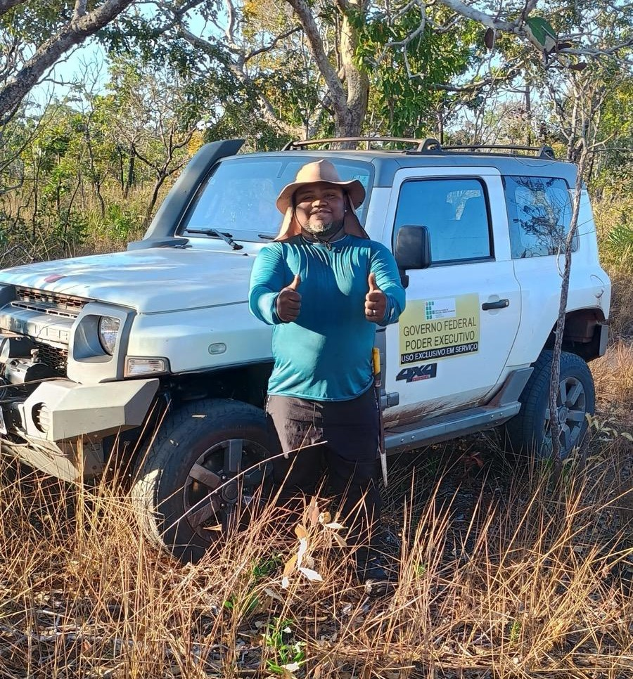
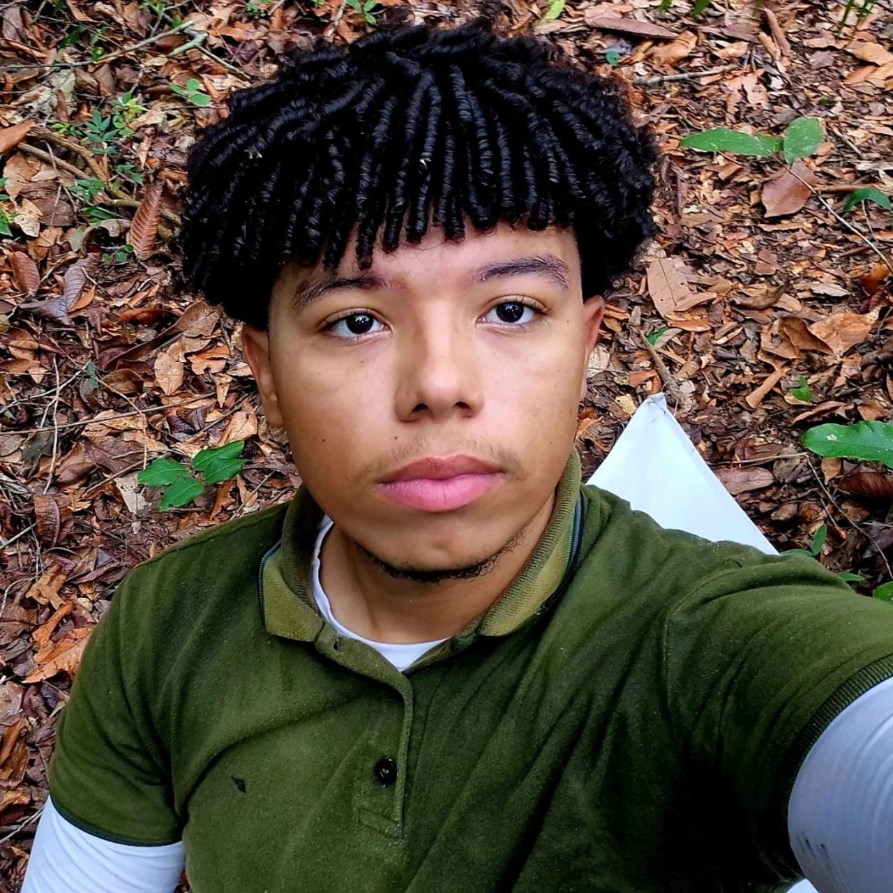
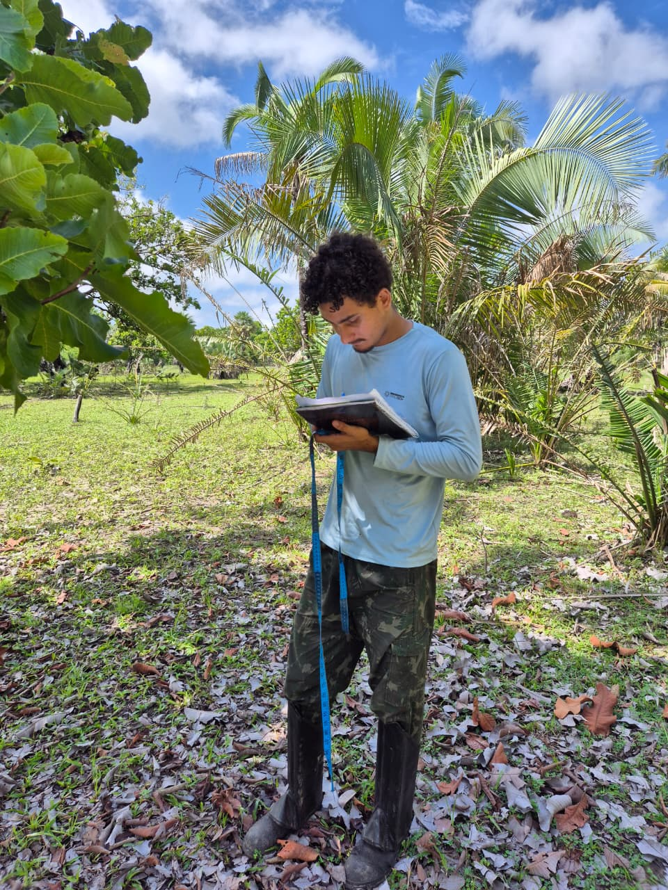
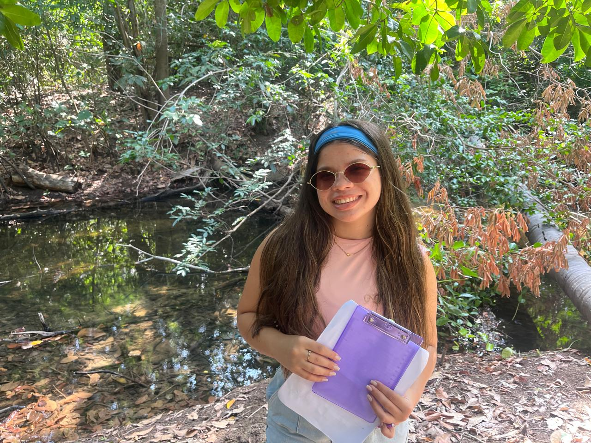
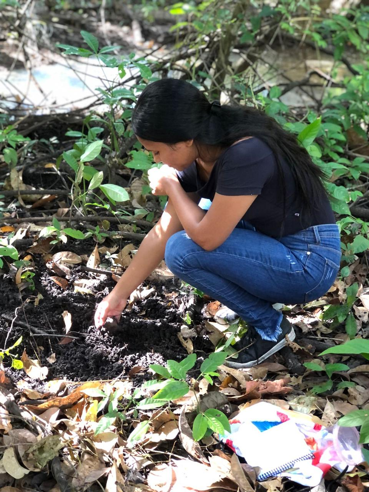
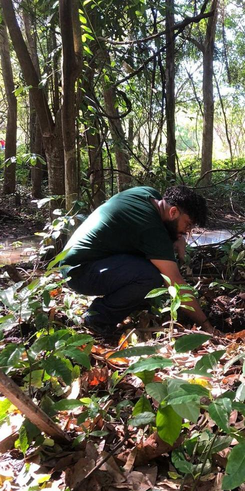

Quem somos nós?
Somos uma empresa de inteligência ambiental especializada em monitoramento biológico, geoprocessamento e diagnóstico da qualidade ambiental. Nossa atuação integra conhecimento científico, tecnologias geoespaciais e análises da fauna edáfica para transformar dados complexos em informações estratégicas para o agronegócio, projetos ambientais e processos de licenciamento.
Trabalhamos para promover a sustentabilidade e a conformidade ambiental, oferecendo soluções inovadoras que auxiliam na avaliação da saúde do solo, no monitoramento de impactos ambientais e na construção de estratégias voltadas para certificações ESG e recuperação de áreas degradadas. Nosso compromisso é unir ciência, tecnologia e gestão ambiental para gerar resultados confiáveis e contribuir para o uso sustentável dos recursos naturais.
VISÃO
Ser reconhecida globalmente como autoridade em inteligência do solo e conservação da biodiversidade edáfica. Comprometidos em desenvolver soluções inovadoras para o agronegócio, estamos dedicados a incentivar nossos clientes a adotarem práticas regenerativas e obterem conformidade ESG de alto padrão.
MISSÃO
Promover a excelência no monitoramento ambiental ao criar e compartilhar modelos inovadores que traduzem a complexidade da fauna do solo em informação acionável. Nosso compromisso é atingir os mais elevados padrões de qualidade e eficácia, apoiando o licenciamento e a recuperação de áreas degradadas.
VALORES
Nosso compromisso absoluto com o respeito pela natureza e a precisão científica guia todas as nossas ações. Buscamos constantemente a transparência em nossos laudos técnicos e mapeamentos geoespaciais. Estamos comprometidos em garantir dados confiáveis que transformam passivos em ativos sustentáveis.
Nossa metodologia
Na Fauna in Flora, desenvolvemos soluções ambientais a partir de uma abordagem integrada, que articula geotecnologias, monitoramento em campo, análise de indicadores biológicos e interpretação técnica especializada. Essa metodologia nos permite compreender de forma ampla a dinâmica ambiental de cada área, produzindo diagnósticos consistentes, dados confiáveis e subsídios qualificados para a tomada de decisão.
Com o apoio do geoprocessamento, do sensoriamento remoto e da avaliação ambiental aplicada, transformamos dados complexos em informações estratégicas capazes de orientar ações de monitoramento, regularização, compensação e recuperação ambiental. Nossa atuação contempla desde o levantamento de campo e a organização de bases geoespaciais até a elaboração de mapas, relatórios técnicos e indicadores que fortalecem a gestão ambiental dos projetos.
Mais do que atender exigências legais, buscamos entregar inteligência ambiental aplicada, promovendo segurança técnica, conformidade normativa e soluções sustentáveis alinhadas às necessidades de cada cliente e às particularidades de cada território.
Geotecnologias e Sensoriamento
Monitoramento em Campo
Análise de Indicadores
Inteligência Aplicada
Nossos serviços
A Fauna in Flora oferece soluções técnicas especializadas voltadas à gestão, monitoramento e regularização ambiental, atuando de forma estratégica no apoio a empreendimentos, propriedades rurais, projetos e instituições que demandam suporte ambiental qualificado. Nossos serviços integram conhecimento científico, análise técnica e ferramentas de geotecnologia para garantir resultados confiáveis, aplicáveis e alinhados às necessidades de cada cliente.
Elaboração de laudos e relatórios ambientais
Consultoria ambiental especializada
Monitoramento periódico do solo e de indicadores ambientais
Serviços de geoprocessamento e produção de mapas temáticos
Produção de relatórios e indicadores ESG
Treinamentos técnicos e capacitação de equipes
Planos de acompanhamento e suporte técnico contínuo
Desenvolvimento de projetos, editais e propostas financiadas
Por que escolher a Fauna in Flora
Na Fauna in Flora, unimos conhecimento técnico, compromisso ambiental e visão estratégica para oferecer soluções que vão além da execução de serviços. Nossa atuação é pautada pela integração entre ciência, tecnologia e responsabilidade socioambiental, garantindo aos clientes suporte qualificado em todas as etapas de seus projetos.
Trabalhamos com foco na precisão técnica, na interpretação inteligente dos dados ambientais e na construção de soluções personalizadas, sempre considerando as particularidades de cada território, atividade e demanda. Ao integrar monitoramento, geoprocessamento, relatórios técnicos e acompanhamento contínuo, entregamos não apenas conformidade legal, mas também informações que fortalecem a gestão ambiental e a tomada de decisão.
Escolher a Fauna in Flora é contar com uma empresa comprometida com a qualidade técnica, a inovação, a sustentabilidade e a valorização da biodiversidade, transformando desafios ambientais em oportunidades de planejamento, regularização e conservação.
Como mantemos nossos clientes próximos
Na Fauna in Flora, acreditamos que um serviço ambiental de qualidade vai além da entrega de relatórios. Por isso, buscamos construir um relacionamento contínuo com nossos clientes por meio de consultoria personalizada, suporte técnico, monitoramento ambiental e produção de informações atualizadas para apoiar a tomada de decisão.
Consultoria personalizada
Relatórios técnicos periódicos
Suporte online
Monitoramento contínuo
Treinamentos presenciais
Produção de mapas e indicadores
Educação ambiental aplicada ao campo
Nossa Equipe
Conheça os especialistas dedicados a transformar dados ambientais em inteligência aplicada para o seu negócio.

Lailton Aguiar

Samuel Levi

Eduardo

Bennaya

Giliane

Thauan


Guias e Manuais
Conheça a coletânea de guias corporativos da fauna e flora da Faunainflora: materiais técnicos e visuais desenvolvidos para identificação de espécies, estudos ambientais, relatórios e processos de licenciamento.